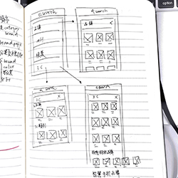
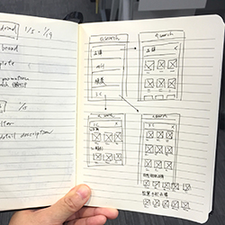
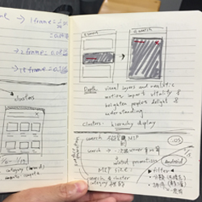
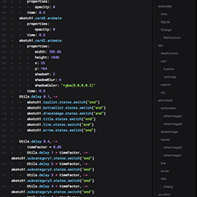
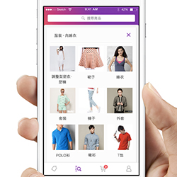
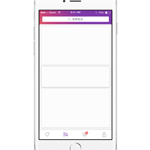

Shopping iOS/Android is an E-commerce platform and was selected by the Apple store as the best new app and number one shopping app in Taiwan. I was very excited to be a part of this scrum team. It was my first UX/UI project for Yahoo. I delivered all of the product design features, including category experience, favorite brands, multiple item promotion and order status during the past three months. I was responsible for interaction design, planning, discussing with stakeholders, prototyping and ensuring iOS and Android platform experience is good enough. Here are some of the projects I’ve worked on so far:
In category design, we use list view design with category-related photos so that our user can easily and quickly browse the category they want. When users select a category, they will see a list of clusters from our backend data. Each cluster contains a cluster image and title. Once users choose any cluster, they will be taken to a listing page. When users search on a category main page or category page, we show them search results from the whole site. If users search on other cluster page, we show them the search results under that cluster.
In the beginning, we will have a kick-off meeting with business units. After we understand their strategy and vision, we do not just start design and sketch, we want to learn from users and find out users pain point. we want to know why our user wants to shopping and their shopping behavior. So we start walking their daily lives, visit their favorite spots.
After that, we might start to implement our features. But the most important things is to understand who we are designing for. What kind of problems are we trying to solve? Each product designer will be faced with tons of challenges. If version one has a lot of good feedback and product managers want to increase the user’s retention rate, conversion rate, rating and daily active user, then the solution will probably want to add some key features to see if the business matrix goes well or not. And some of the features might provide better browsing experience such as better searching experience, category and filter feature. Therefore, we've selected some popular features or the most important feature from PC platform into shopping app version two.
Then, "Category" feature is the first item I've worked on it to improve the overall browsing experience. The category can help the user find items easily. As a product designer, I think define the problems and understand our goals for this feature is the first priority. For category design, we have three goals for this feature, reduce feature gap between Android and iOS, improve shopping app's user experience and help our user find out the items when they start searching and browsing something very easily. Here’s our process :
1. Review and refine 2. Make a hypothesis and prototype it 3. Revisit the products core value
I began to sketch as many different directions as I could, pick the best one solution and then test them out in a prototype. After getting to a good place with each iteration in Sketch, I would then turn to Framer Studio.
     We hope users can browse categories and clusters on one page and don’t need to go back-and-forth. My challenge - designing an interaction so that users can easily switch category page and cluster page - is to think about the most intuitive experience. The main concept was to keep the navigation and tab bar, the transitions between categories and clusters animated. To the user, this is one continuous space. So the same background element transition on different screens could be seen as the connection between category and cluster page. In this case, the category title and background always remains one cohesive element; it simply changes its representation over time.
This prototype's problem is readability. I put category title to the right side. But right alignment is not easier to scan. Play with the prototype Here
Even though I improved the readability, I still feel the relationship between category and cluster is not good enough. Play with the prototype Here
In this version, I use an animation and strong visual hierarchy that elegantly explains where the clusters come from and where they are when they’re not visible. Play with the prototype Here
To improve browsing experience, filter is another key feature that we need to do. Filter feature for search result page allows user discover the items easier. It contains several filer attributes and sorting logic. This was an exciting project since I love to buy something on shopping app. I had always dreamed of creating this filter feature to make the experience better and I finally got the chance! See the video here
To increase the density and improve the browsing experience for search research page. We decided to add micro-interaction when user scrolling up and down. E.g. when user scrolling down, they can focus on search result page then the navigation and tab bar will be hidden temporarily. See the video here
In shopping app, we have tons of good deals that user can keep exploring and shopping. But our user is hard to find out the item when there're so many good deals on the promotion page. The only thing they can do is just keep scrolling the page which is a very bad experience. Therefore, we decided to have a light way filter experience to help the user discover deals easier. See how it works here
To improve the browsing experience and increase the content density, we add some micro-interaction for this page. If user scrolling deals, the nav bar can be hidden when people scrolling for new deals and revealed if they start pulling down trying to get back to the top. See the video here
In shopping team, I need to clearly deliver core value for new app features. Once the feature to be implemented is confirmed, I always comes out the UI mockup, animation and prototype very quickly, so that team members can discuss following details more easily. Category design and favorite brand list for instance, I made the prototype and animation before the implementation starts, so that engineers can have more detail discussion by referring to these designs.
{kind=link}
{kind=link}
{kind=link}
{kind=link}
{kind=link}
{kind=link}